gf_violin(longevity ~ group, data = FruitflyReduced) %>%
gf_jitter(width = 0.2, height = 0, alpha = 0.5) %>%
gf_point(stat = "summary", color = "red", size = 3, alpha = 0.5, fun = mean)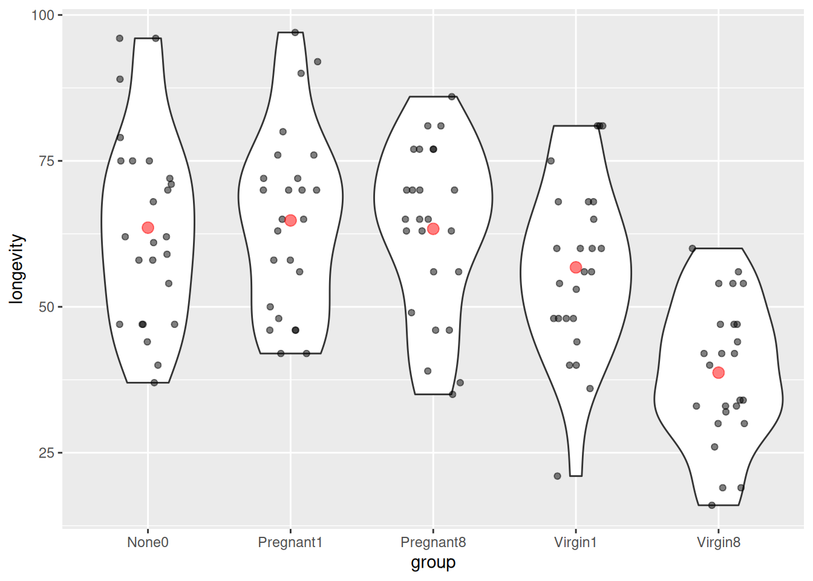
La especie estudiada fue la mosca de la fruta, Drosophila melanogaster (Hanley & Shapiro, 1994), conocida porque las hembras recién inseminadas no se aparean nuevamente durante al menos dos días y los machos no cortejan activamente a las hembras embarazadas. Para ilustrar el uso del modelo, se estudió la duración de la vida de los machos en función de su actividad sexual. En el experimento, se manipuló la actividad sexual suministrando a los machos individuales hembras vírgenes receptivas a una tasa de una u ocho vírgenes por día. La longevidad de estos machos se registró y se comparó con la de dos grupos de control: uno con machos mantenidos con hembras recién inseminadas en igual número que las hembras vírgenes y otro con machos sin hembras. El objetivo era determinar si la actividad sexual de los machos reducía su vida, ya que esto ya estaba establecido para las hembras. Un efecto perjudicial de la actividad sexual en machos sería sorprendente, dado que se presume que los costos fisiológicos de la actividad sexual son menores en machos que en hembras. Cada grupo experimental y de control constaba de 25 moscas macho.
gf_violin(longevity ~ group, data = FruitflyReduced) %>%
gf_jitter(width = 0.2, height = 0, alpha = 0.5) %>%
gf_point(stat = "summary", color = "red", size = 3, alpha = 0.5, fun = mean)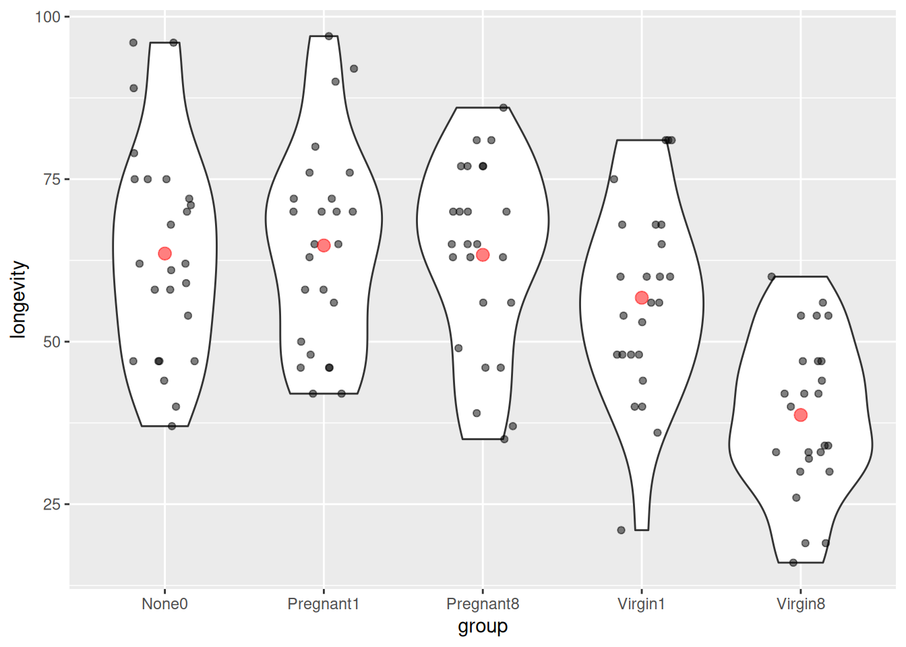
Es bastante fácil pedirle a brm() que ajuste un modelo para nosotros. Solo proporcionemos nuestras variables explicativas y de respuesta y veamos qué sucede.
flies_brm <- brm(longevity ~ group, data = FruitflyReduced)Compiling Stan program...Start samplingflies_stan <- stanfit(flies_brm)
flies_stanInference for Stan model: anon_model.
4 chains, each with iter=2000; warmup=1000; thin=1;
post-warmup draws per chain=1000, total post-warmup draws=4000.
mean se_mean sd 2.5% 25% 50% 75% 97.5% n_eff Rhat
b_Intercept 63.52 0.06 2.93 57.66 61.55 63.55 65.44 69.26 2555 1
b_groupPregnant1 1.29 0.08 4.16 -6.93 -1.49 1.35 4.17 9.29 2816 1
b_groupPregnant8 -0.09 0.08 4.19 -8.39 -2.84 -0.10 2.66 8.24 2882 1
b_groupVirgin1 -6.71 0.08 4.14 -14.91 -9.45 -6.70 -3.94 1.25 2797 1
b_groupVirgin8 -24.78 0.07 4.17 -32.98 -27.45 -24.77 -21.97 -16.70 3131 1
sigma 14.88 0.02 0.96 13.16 14.21 14.85 15.50 16.88 3274 1
Intercept 57.46 0.02 1.30 54.94 56.61 57.45 58.34 60.00 4535 1
lprior -7.49 0.00 0.05 -7.60 -7.52 -7.49 -7.46 -7.40 3197 1
lp__ -519.50 0.04 1.73 -523.79 -520.38 -519.17 -518.21 -517.12 1922 1
Samples were drawn using NUTS(diag_e) at Sat Jun 22 22:02:05 2024.
For each parameter, n_eff is a crude measure of effective sample size,
and Rhat is the potential scale reduction factor on split chains (at
convergence, Rhat=1).mcmc_combo(as.mcmc.list(flies_stan))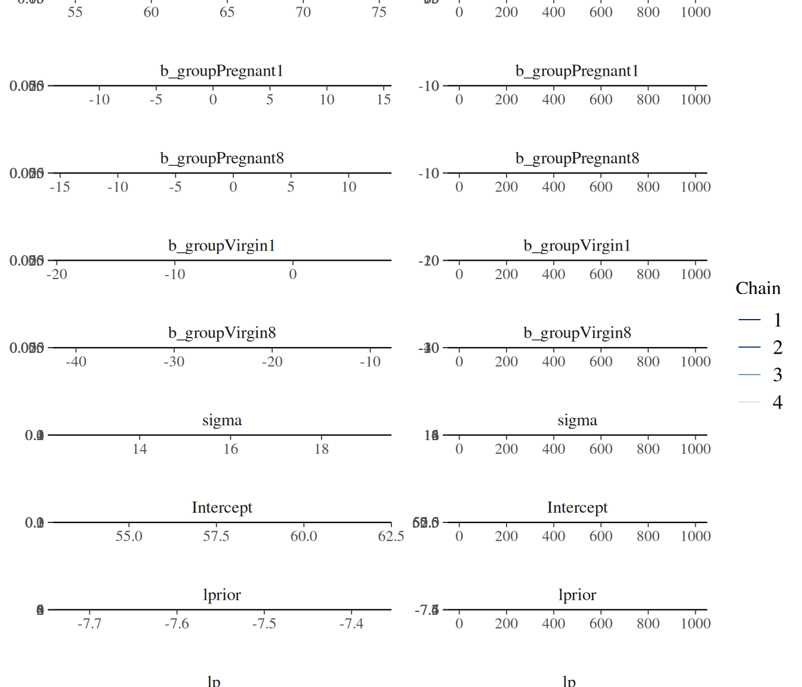
mcmc_areas_ridges(as.mcmc.list(flies_stan), regex_pars = "b_g")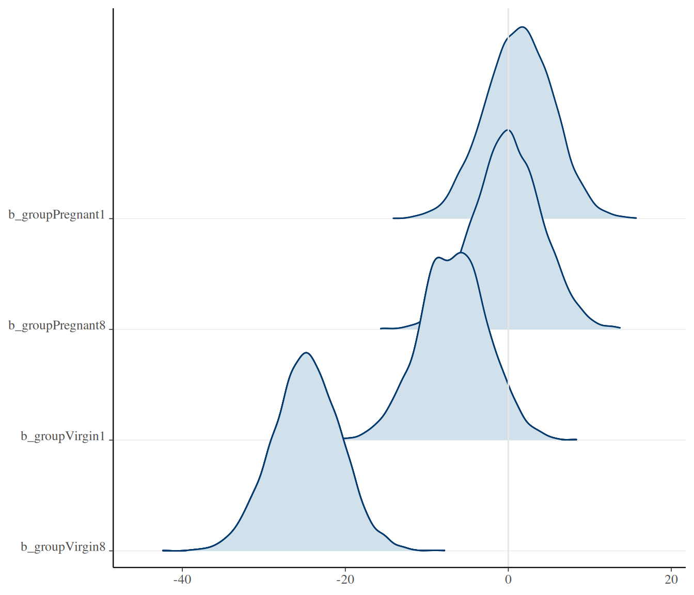
Analicemos la codificación que usa STAN en la variable categórica:
standata(flies_brm) %>% lapply(head)$N
[1] 125
$Y
[1] 35 37 49 46 63 39
$K
[1] 5
$Kc
[1] 4
$X
Intercept groupPregnant1 groupPregnant8 groupVirgin1 groupVirgin8
1 1 0 1 0 0
2 1 0 1 0 0
3 1 0 1 0 0
4 1 0 1 0 0
5 1 0 1 0 0
6 1 0 1 0 0
$prior_only
[1] 0El modelo resulta ser en este caso:
[ = _0 + _1 x_1 + _2 x_2 + _3 x_3 + _4 x_4 + \ = _0 + _1 x_1 + _2 x_2 + _3 x_3 + _4 x_4 + {Norm}(0, ) ]
donde, por ejemplo,
[ x_1 = [![ = ]!] \ =
\[\begin{cases} 1 & \mbox{si group} = \mbox{Pregnant1} \\ 0 & \mbox{si group} \neq \mbox{Pregnant1} \end{cases}\]]
En otras palabras, la distribución de la longevidad es
None0Pregnant1Pregnant2Virgin1Virgin2Aquí están las distribuciones previas predeterminadas:
prior_summary(flies_brm) prior class coef group resp dpar nlpar lb ub source
(flat) b default
(flat) b groupPregnant1 (vectorized)
(flat) b groupPregnant8 (vectorized)
(flat) b groupVirgin1 (vectorized)
(flat) b groupVirgin8 (vectorized)
student_t(3, 58, 17.8) Intercept default
student_t(3, 0, 17.8) sigma 0 defaultPrevias planas e impropias para los parámetros b_.
Distribución t con 3 grados de libertad para el intercepto (colas más pesadas que una distribución normal).
longevity ~ 0 + intercept + group.df_stats(~ longevity, data = FruitflyReduced, mean, sd) response mean sd
1 longevity 57.44 17.56389“T” para sigma.
El modelo anterior difiere del modelo básico en el Kruschke.
Podemos acercarnos más al modelo de DBDA usando esto:
flies2_brm <-
brm(longevity ~ group, data = FruitflyReduced,
prior = c(
set_prior(class = "Intercept", "normal(60, 100)"), # 100 = 5 * 20
set_prior(class = "b", "normal(0, 10)"), # group = "b" es el valor predeterminado; se podría omitir
set_prior(class = "sigma", "uniform(20.0/1000.0, 20.0 * 1000.0)")
)
)Warning: It appears as if you have specified an upper bounded prior on a parameter that has no natural upper bound.
If this is really what you want, please specify argument 'ub' of 'set_prior' appropriately.
Warning occurred for prior
<lower=0> sigma ~ uniform(20.0/1000.0, 20.0 * 1000.0)Compiling Stan program...Start samplingprior_summary(flies2_brm)
stancode(flies2_brm)Esto todavía no es exactamente igual al modelo utilizado por Kruschke. Resulta que hay múltiples maneras de codificar los \(\beta\)s. Un tercero es utilizado por Kruschke y requiere un poco más de trabajo para ajustarse usando brm():
Si eliminamos el intercepto en el modelo brm(), obtenemos un modelo con un \(\beta_i\) para cada media de grupo en lugar de un \(\beta_0\) para el primer grupo y un \(\beta_i\) para la diferencia en las medias de los grupos cuando \(i > 0\):
flies3_brm <-
brm(
longevity ~ 0 + group, data = FruitflyReduced,
prior = c(
set_prior(class = "b", "normal(60, 10)"), # group = "b" es el valor predeterminado; se podría omitir
set_prior(class = "sigma", "uniform(20.0/1000.0, 20.0 * 1000.0)")
),
sample_prior = TRUE
)Warning: It appears as if you have specified an upper bounded prior on a parameter that has no natural upper bound.
If this is really what you want, please specify argument 'ub' of 'set_prior' appropriately.
Warning occurred for prior
<lower=0> sigma ~ uniform(20.0/1000.0, 20.0 * 1000.0)Compiling Stan program...Start samplingprior_summary(flies3_brm)
stancode(flies3_brm)Esto es equivalente a
[ = _0 x_0 + _1 x_1 + _2 x_2 + _3 x_3 + _4 x_4 + = _0 x_0 + _1 x_1 + _2 x_2 + _3 x_3 + _4 x_4 + {Norm}(0, ) ]
donde, por ejemplo,
[ x_1 = [![ = ]!] \ =
\[\begin{cases} 1 & \mbox{si group} = \mbox{Pregnant1} \\ 0 & \mbox{si group} \neq \mbox{Pregnant1} \end{cases}\]]
En otras palabras, la distribución de la longevidad es
None0Pregnant1Pregnant2Virgin1Virgin2Usamos el modelo 2:
stanfit(flies2_brm)Inference for Stan model: anon_model.
4 chains, each with iter=2000; warmup=1000; thin=1;
post-warmup draws per chain=1000, total post-warmup draws=4000.
mean se_mean sd 2.5% 25% 50% 75% 97.5% n_eff Rhat
b_Intercept 61.72 0.05 2.48 56.91 60.07 61.71 63.41 66.62 3027 1
b_groupPregnant1 2.81 0.06 3.68 -4.21 0.25 2.74 5.25 10.19 3874 1
b_groupPregnant8 1.50 0.06 3.63 -5.79 -0.87 1.53 3.94 8.48 4068 1
b_groupVirgin1 -4.53 0.06 3.66 -11.85 -6.98 -4.49 -2.17 2.71 3667 1
b_groupVirgin8 -21.11 0.06 3.61 -28.17 -23.58 -21.16 -18.67 -14.01 3874 1
sigma 14.97 0.02 0.98 13.23 14.29 14.91 15.58 17.06 4221 1
Intercept 57.45 0.02 1.32 54.86 56.54 57.49 58.37 60.00 4806 1
lprior -30.96 0.01 0.81 -32.80 -31.46 -30.88 -30.38 -29.62 3555 1
lp__ -543.16 0.04 1.74 -547.45 -544.09 -542.79 -541.89 -540.81 1974 1
Samples were drawn using NUTS(diag_e) at Sat Jun 22 22:04:26 2024.
For each parameter, n_eff is a crude measure of effective sample size,
and Rhat is the potential scale reduction factor on split chains (at
convergence, Rhat=1).En este modelo, un grupo corresponde al intercepto del modelo, y las comparaciones de otros grupos con este grupo implican investigar la distribución posterior de uno de los otros \(\beta\)s.
flies_post <- posterior(flies_stan)
names(flies_post) [1] "b_Intercept" "b_groupPregnant1" "b_groupPregnant8" "b_groupVirgin1" "b_groupVirgin8"
[6] "sigma" "Intercept" "lprior" "lp__" "chain"
[11] "iter" plot_post(flies_post$b_groupPregnant1)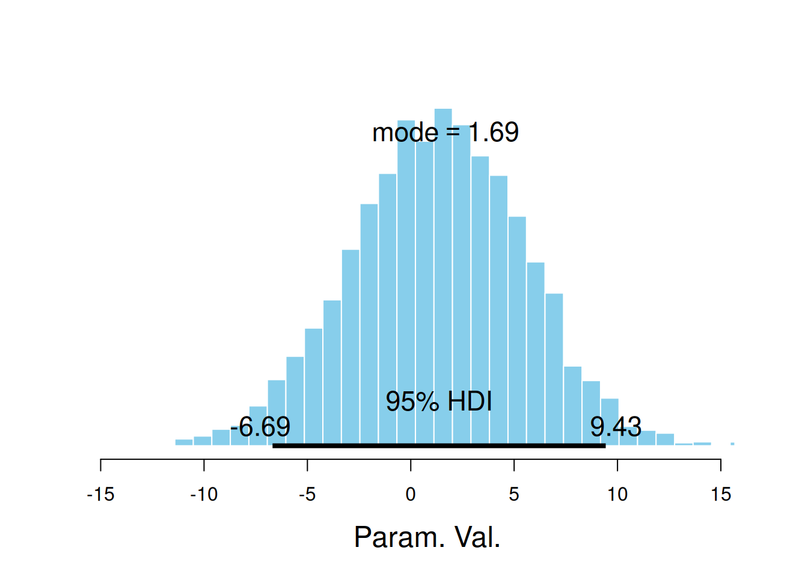
$posterior
ESS mean median mode
var1 2880 1.288035 1.346441 1.688973
$hdi
prob lo hi
1 0.95 -6.686603 9.430803hdi(flies_post$b_groupPregnant1) par lo hi mode prob
1 var1 -6.686603 9.430803 0.9314014 0.95plot_post(flies_post$b_groupVirgin1)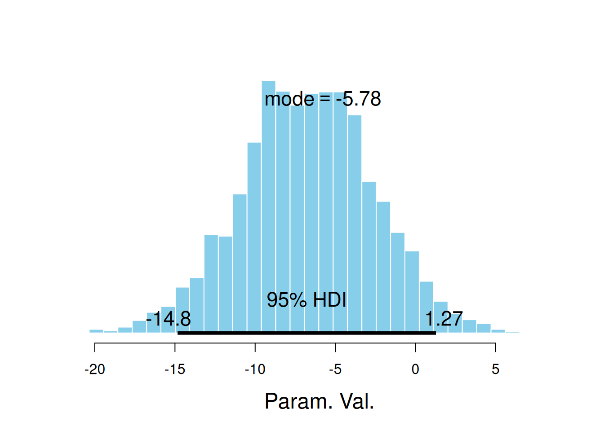
$posterior
ESS mean median mode
var1 2964.378 -6.714818 -6.70026 -5.776553
$hdi
prob lo hi
1 0.95 -14.83658 1.274635mcmc_areas(as.mcmc.list(flies_stan), pars = "b_groupVirgin1", prob = 0.95)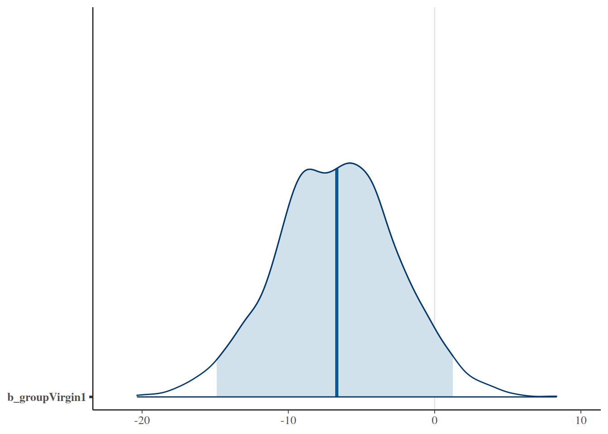
hdi(flies_post$b_groupVirgin1) par lo hi mode prob
1 var1 -14.83658 1.274635 -4.381462 0.95¿Qué pasa si queremos comparar los grupos Virgin1 y Virgin8? Podemos usar la identidad \(\beta_0 + \beta_i - (\beta_0 + \beta_j) = \beta_i - \beta_j\) para simplificar el álgebra y hacerlo de esta manera.
flies_post <-
flies_post %>% mutate(dVirgin = b_groupVirgin8 - b_groupVirgin1)
plot_post(flies_post$dVirgin, xlab = "Virgin8 - Virgin1")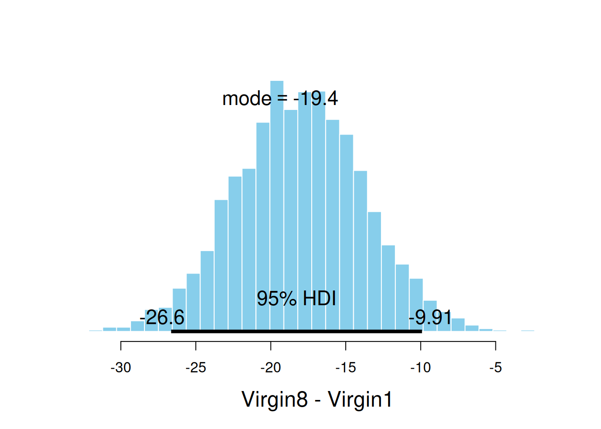
$posterior
ESS mean median mode
var1 5166.695 -18.0649 -18.04029 -19.36771
$hdi
prob lo hi
1 0.95 -26.6462 -9.91304¿Qué pasa si queremos comparar los dos grupos de vírgenes con los otros 3 grupos? Esto es un poco más fácil de hacer usando el modelo sin un término de intercepto.
flies3_post <- posterior(flies3_brm)Warning: Method 'posterior_samples' is deprecated. Please see ?as_draws for recommended
alternatives.names(flies3_post) [1] "b_groupNone0" "b_groupPregnant1" "b_groupPregnant8" "b_groupVirgin1" "b_groupVirgin8"
[6] "sigma" "prior_b" "prior_sigma" "lprior" "lp__" flies3_post <-
flies3_post %>%
mutate(
contrast =
(b_groupVirgin8 + b_groupVirgin1)/2 -
(b_groupPregnant1 + b_groupPregnant8 + b_groupNone0) / 3
)
plot_post(flies3_post$contrast, xlab = "Virgin vs non-virgin groups")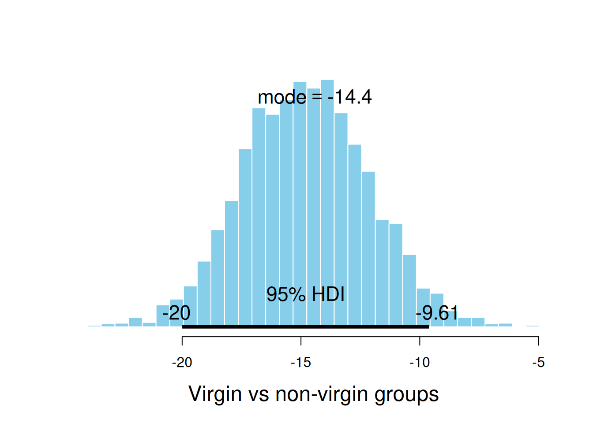
$posterior
ESS mean median mode
var1 5070.07 -14.79242 -14.81572 -14.41102
$hdi
prob lo hi
1 0.95 -19.99495 -9.614157La expresión
[ - = - _0 - _1 - _2 + _3 + _4 ]
es un ejemplo de un contraste. Un contraste es simplemente una combinación lineal de las medias de los grupos tal que la suma de los coeficientes sea 0. Muchas relaciones interesantes pueden investigarse usando contrastes, y el paquete brms incluye la función hypothesis() para ayudarnos a hacer esto. (Nota: debido a que incluimos sample_prior = TRUE en la llamada a brm() para este modelo, el gráfico a continuación muestra tanto las distribuciones previas como las posteriores para el contraste.)
h <-
hypothesis(
flies3_brm,
"(groupVirgin8 + groupVirgin1) / 2 <
(groupPregnant1 + groupPregnant8 + groupNone0) / 3"
)
hHypothesis Tests for class b:
Hypothesis Estimate Est.Error CI.Lower CI.Upper Evid.Ratio Post.Prob Star
1 ((groupVirgin8+gr... < 0 -14.79 2.67 -19.07 -10.39 Inf 1 *
---
'CI': 90%-CI for one-sided and 95%-CI for two-sided hypotheses.
'*': For one-sided hypotheses, the posterior probability exceeds 95%;
for two-sided hypotheses, the value tested against lies outside the 95%-CI.
Posterior probabilities of point hypotheses assume equal prior probabilities.plot(h)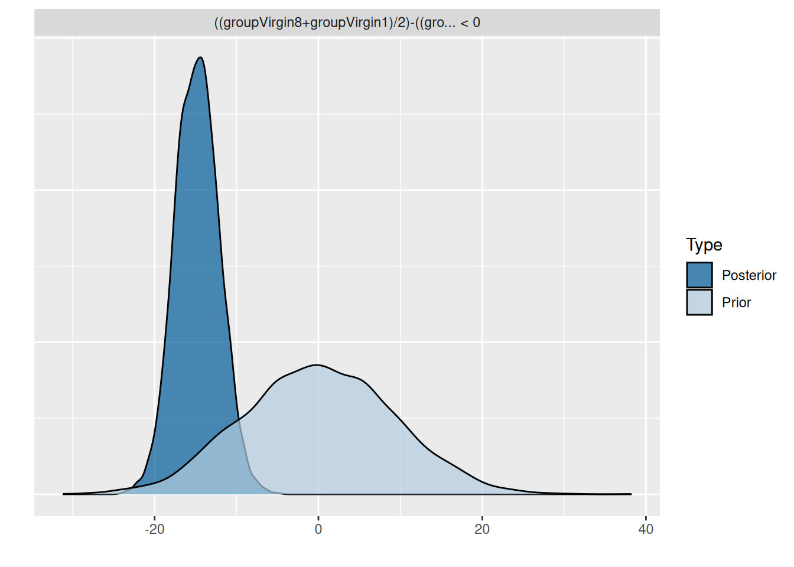
Incluso podemos probar múltiples hipótesis a la vez.
h2 <-
hypothesis(
flies3_brm,
c("groupVirgin1 < (groupPregnant1 + groupPregnant8 + groupNone0) / 3",
"groupVirgin8 < (groupPregnant1 + groupPregnant8 + groupNone0) / 3")
)
h2Hypothesis Tests for class b:
Hypothesis Estimate Est.Error CI.Lower CI.Upper Evid.Ratio Post.Prob Star
1 (groupVirgin1)-((... < 0 -6.52 3.32 -11.93 -0.92 35.36 0.97 *
2 (groupVirgin8)-((... < 0 -23.06 3.34 -28.61 -17.51 Inf 1.00 *
---
'CI': 90%-CI for one-sided and 95%-CI for two-sided hypotheses.
'*': For one-sided hypotheses, the posterior probability exceeds 95%;
for two-sided hypotheses, the value tested against lies outside the 95%-CI.
Posterior probabilities of point hypotheses assume equal prior probabilities.plot(h2)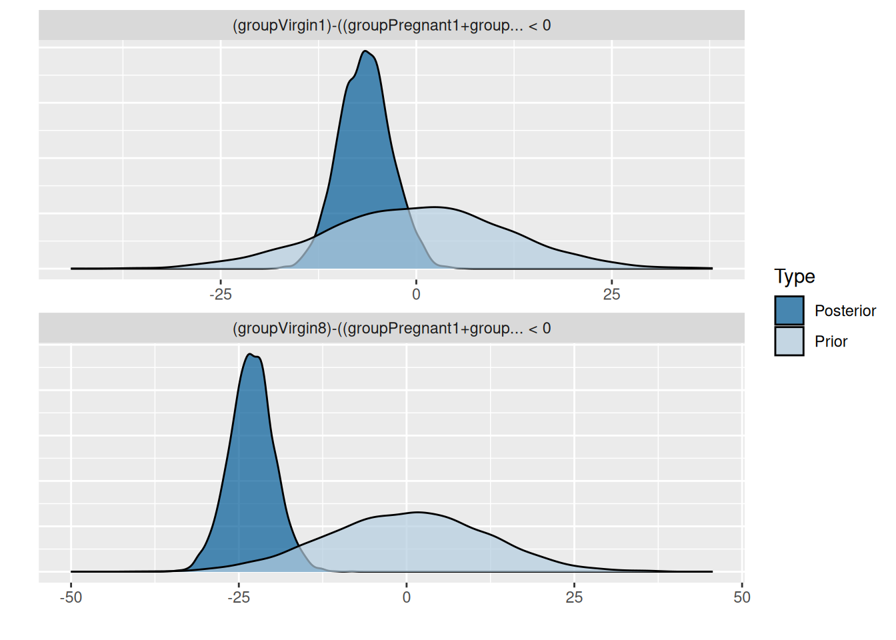
En el ejemplo anterior, expresamos nuestro contraste como una desigualdad. También podemos expresarlo como una igualdad. El resultado que obtenemos de hypothesis() es un poco diferente si lo hacemos así.
h3 <-
hypothesis(
flies3_brm,
c("groupVirgin1 = (groupPregnant1 + groupPregnant8 + groupNone0) / 3",
"groupVirgin8 = (groupPregnant1 + groupPregnant8 + groupNone0) / 3")
)
h3Hypothesis Tests for class b:
Hypothesis Estimate Est.Error CI.Lower CI.Upper Evid.Ratio Post.Prob Star
1 (groupVirgin1)-((... = 0 -6.52 3.32 -12.90 0.18 0.6 0.38
2 (groupVirgin8)-((... = 0 -23.06 3.34 -29.68 -16.39 0.0 0.00 *
---
'CI': 90%-CI for one-sided and 95%-CI for two-sided hypotheses.
'*': For one-sided hypotheses, the posterior probability exceeds 95%;
for two-sided hypotheses, the value tested against lies outside the 95%-CI.
Posterior probabilities of point hypotheses assume equal prior probabilities.plot(h3)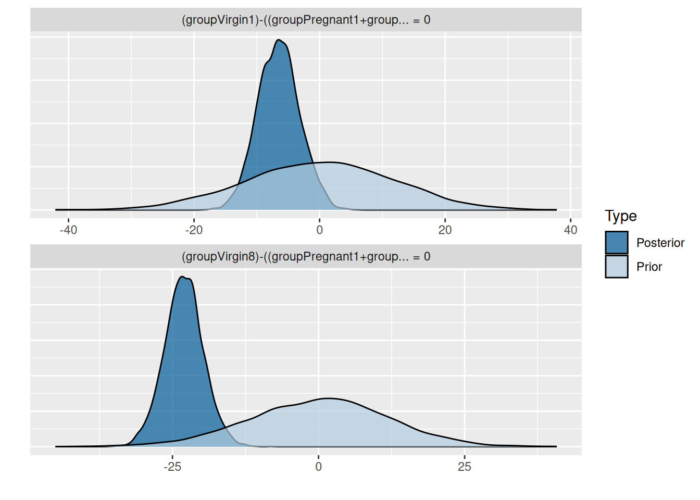
sample_prior = TRUE, ya que se requieren muestras previas para hacer el cálculo.)Los datos en CalvinBayes::SplitPlotAgri provienen de un estudio agrícola en el que se utilizaron diferentes métodos de labranza y diferentes fertilizantes, y posteriormente se midió el rendimiento del cultivo (en bushels por acre).
gf_point(Yield ~ Fert | ~ Till, data = SplitPlotAgri, alpha = 0.4, size = 4)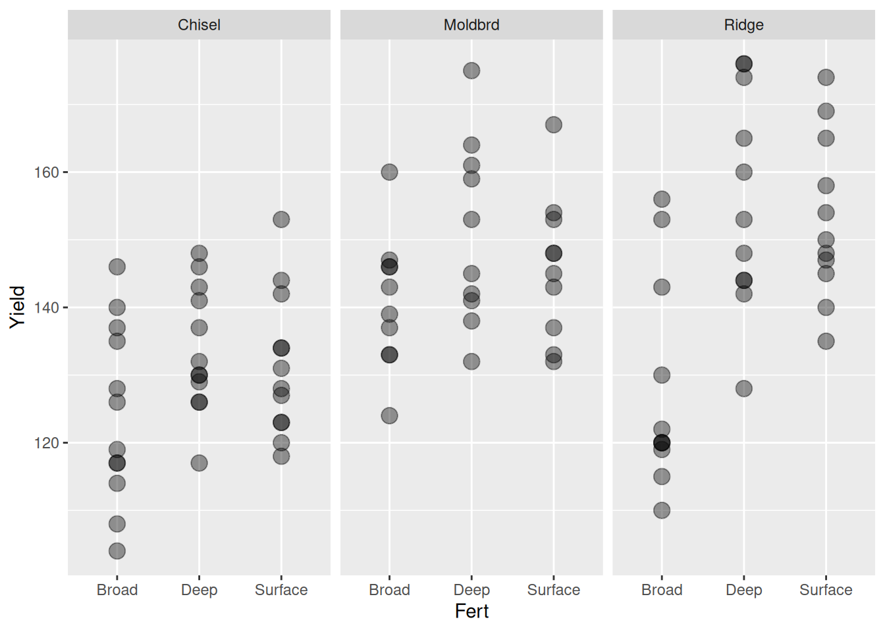
Ajustamos dos modelos: sin/con interacción entre fertilizante y labranza. Estamos interesados en la pregunta: ¿Cómo usarías cada modelo para estimar el rendimiento medio al usar labranza de contorno (ridge) y fertilizante profundo (deep)?
fert1_brm <-
brm(Yield ~ Till + Fert, data = SplitPlotAgri)Compiling Stan program...Start samplingfert2_brm <-
brm(Yield ~ Till * Fert, data = SplitPlotAgri)Compiling Stan program...Start samplingfert1_brm Family: gaussian
Links: mu = identity; sigma = identity
Formula: Yield ~ Till + Fert
Data: SplitPlotAgri (Number of observations: 99)
Draws: 4 chains, each with iter = 2000; warmup = 1000; thin = 1;
total post-warmup draws = 4000
Regression Coefficients:
Estimate Est.Error l-95% CI u-95% CI Rhat Bulk_ESS Tail_ESS
Intercept 120.41 2.87 114.86 126.19 1.00 4357 2743
TillMoldbrd 16.08 3.27 9.70 22.42 1.00 3896 2453
TillRidge 15.71 3.12 9.57 21.80 1.00 4271 3005
FertDeep 15.76 3.25 9.41 22.10 1.00 4134 3133
FertSurface 12.59 3.25 6.15 18.94 1.00 4480 3303
Further Distributional Parameters:
Estimate Est.Error l-95% CI u-95% CI Rhat Bulk_ESS Tail_ESS
sigma 13.12 0.95 11.44 15.13 1.00 3745 2849
Draws were sampled using sampling(NUTS). For each parameter, Bulk_ESS
and Tail_ESS are effective sample size measures, and Rhat is the potential
scale reduction factor on split chains (at convergence, Rhat = 1).Nota que este modelo implica que la diferencia en rendimiento entre el uso de dos fertilizantes es la misma para cada uno de los tres métodos de labranza y la diferencia debida a los métodos de labranza es la misma para cada uno de los tres fertilizantes. Esto puede no ser una suposición razonable. Tal vez algunos fertilizantes funcionen mejor con ciertos métodos de labranza que con otros. El modelo 2 permite esto.
fert2_brm Family: gaussian
Links: mu = identity; sigma = identity
Formula: Yield ~ Till * Fert
Data: SplitPlotAgri (Number of observations: 99)
Draws: 4 chains, each with iter = 2000; warmup = 1000; thin = 1;
total post-warmup draws = 4000
Regression Coefficients:
Estimate Est.Error l-95% CI u-95% CI Rhat Bulk_ESS Tail_ESS
Intercept 124.23 3.72 117.04 131.45 1.00 1898 2074
TillMoldbrd 16.57 5.35 6.03 26.76 1.00 1985 2560
TillRidge 3.73 5.38 -6.42 14.27 1.00 1900 2557
FertDeep 9.55 5.27 -0.60 20.11 1.00 2027 2602
FertSurface 7.14 5.15 -2.84 17.11 1.00 1974 2835
TillMoldbrd:FertDeep 0.63 7.67 -14.34 15.87 1.00 2173 2826
TillRidge:FertDeep 18.04 7.57 2.94 32.74 1.00 2055 2734
TillMoldbrd:FertSurface -1.98 7.62 -16.70 13.11 1.00 2057 2670
TillRidge:FertSurface 18.10 7.40 3.56 32.76 1.00 2131 2520
Further Distributional Parameters:
Estimate Est.Error l-95% CI u-95% CI Rhat Bulk_ESS Tail_ESS
sigma 12.70 0.95 11.01 14.73 1.00 4091 2968
Draws were sampled using sampling(NUTS). For each parameter, Bulk_ESS
and Tail_ESS are effective sample size measures, and Rhat is the potential
scale reduction factor on split chains (at convergence, Rhat = 1).Como antes, podemos optar por ajustar el modelo sin una intersección. Esto produce una diferente parametrización del mismo modelo.
fert2a_brm <-
brm(Yield ~ 0 + Till * Fert, data = SplitPlotAgri)Compiling Stan program...Start samplingfert2a_brm Family: gaussian
Links: mu = identity; sigma = identity
Formula: Yield ~ 0 + Till * Fert
Data: SplitPlotAgri (Number of observations: 99)
Draws: 4 chains, each with iter = 2000; warmup = 1000; thin = 1;
total post-warmup draws = 4000
Regression Coefficients:
Estimate Est.Error l-95% CI u-95% CI Rhat Bulk_ESS Tail_ESS
TillChisel 124.36 3.79 117.14 132.00 1.00 1686 2259
TillMoldbrd 140.85 3.99 133.13 148.72 1.00 3371 2580
TillRidge 128.03 3.83 120.74 135.56 1.00 3107 2710
FertDeep 9.39 5.22 -0.82 19.43 1.00 1546 2872
FertSurface 6.97 5.33 -3.65 17.45 1.00 1606 2377
TillMoldbrd:FertDeep 0.78 7.86 -14.53 16.44 1.00 2013 2594
TillRidge:FertDeep 17.99 7.61 2.82 33.26 1.00 1718 2658
TillMoldbrd:FertSurface -1.82 7.81 -17.10 13.32 1.00 1866 2352
TillRidge:FertSurface 18.14 7.72 3.32 33.43 1.00 1544 2225
Further Distributional Parameters:
Estimate Est.Error l-95% CI u-95% CI Rhat Bulk_ESS Tail_ESS
sigma 12.70 0.97 11.02 14.75 1.00 3415 2432
Draws were sampled using sampling(NUTS). For each parameter, Bulk_ESS
and Tail_ESS are effective sample size measures, and Rhat is the potential
scale reduction factor on split chains (at convergence, Rhat = 1).El estudio utilizó 33 campos diferentes. Cada campo se dividió en 3 secciones y se aplicó un fertilizante diferente a cada una de las tres secciones. (Qué fertilizante se utilizó en qué sección se determinó al azar). Esto se llama un “diseño de parcela dividida” (incluso si se aplica a cosas que no son campos de cultivo).
Hubiera sido posible dividir cada campo en 9 subparcelas y usar todas las combinaciones de labranza y fertilizante, pero ese no fue el enfoque de este estudio. El método de labranza fue el mismo para todo el campo, probablemente porque era mucho más eficiente arar los campos de esta manera.
El gráfico a continuación indica que diferentes campos parecen tener rendimientos base diferentes, ya que los puntos asociados con un campo tienden a estar cerca de la parte superior o inferior de cada uno de los grupos de fertilizantes. Podemos agregar una variable adicional a nuestro modelo para manejar esta situación.
gf_point(Yield ~ Fert | ~ Till, data = SplitPlotAgri, alpha = 0.4, size = 4) %>%
gf_line(group = ~Field)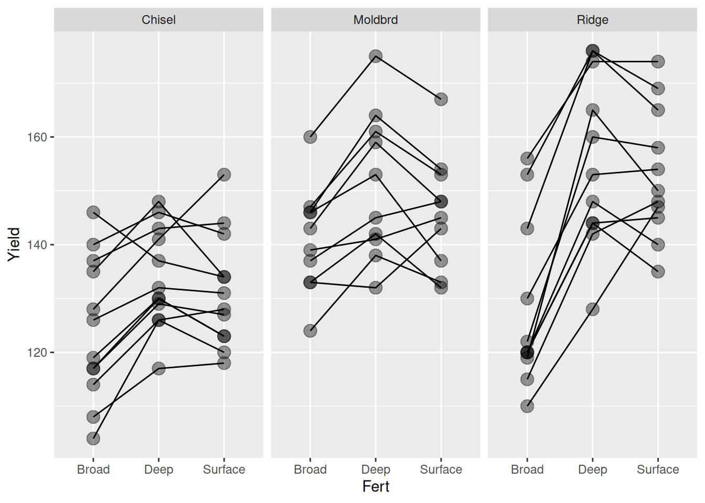
fert3_brm <-
# el uso de factor() es importante aquí porque los ids de campo son números
# factor convierte esto en un factor (es decir, una variable nominal)
brm(Yield ~ Till * Fert + factor(Field), data = SplitPlotAgri)Compiling Stan program...Start samplingWarning: There were 3994 transitions after warmup that exceeded the maximum treedepth. Increase max_treedepth above 10. See
https://mc-stan.org/misc/warnings.html#maximum-treedepth-exceededWarning: Examine the pairs() plot to diagnose sampling problemsWarning: The largest R-hat is 3.09, indicating chains have not mixed.
Running the chains for more iterations may help. See
https://mc-stan.org/misc/warnings.html#r-hatWarning: Bulk Effective Samples Size (ESS) is too low, indicating posterior means and medians may be unreliable.
Running the chains for more iterations may help. See
https://mc-stan.org/misc/warnings.html#bulk-essWarning: Tail Effective Samples Size (ESS) is too low, indicating posterior variances and tail quantiles may be unreliable.
Running the chains for more iterations may help. See
https://mc-stan.org/misc/warnings.html#tail-essfert3_brmWarning: Parts of the model have not converged (some Rhats are > 1.05). Be careful when analysing
the results! We recommend running more iterations and/or setting stronger priors. Family: gaussian
Links: mu = identity; sigma = identity
Formula: Yield ~ Till * Fert + factor(Field)
Data: SplitPlotAgri (Number of observations: 99)
Draws: 4 chains, each with iter = 2000; warmup = 1000; thin = 1;
total post-warmup draws = 4000
Regression Coefficients:
Estimate Est.Error l-95% CI u-95% CI Rhat Bulk_ESS Tail_ESS
Intercept 118.62 3.64 111.42 125.64 1.16 21 52
TillMoldbrd -3993.97 5617.77 -15275.81 5024.52 2.83 5 15
TillRidge 846.24 7487.03 -8079.22 15129.64 3.09 5 12
FertDeep 10.06 2.22 5.75 14.91 1.07 46 76
FertSurface 7.93 2.26 3.94 12.75 1.13 23 35
factorField2 14.92 5.09 5.20 25.84 1.11 30 74
factorField3 17.76 5.32 7.21 27.91 1.15 21 36
factorField4 5.64 5.03 -3.70 15.59 1.12 25 64
factorField5 15.61 5.04 5.39 25.26 1.09 36 84
factorField6 -1.20 5.21 -11.49 10.17 1.11 34 56
factorField7 -7.90 4.85 -17.36 2.00 1.12 31 77
factorField8 -10.61 4.78 -19.83 -1.17 1.10 32 88
factorField9 -0.39 4.90 -9.76 10.20 1.14 23 39
factorField10 17.20 4.93 7.23 27.42 1.10 34 49
factorField11 14.69 4.56 6.03 24.60 1.08 40 51
factorField12 -1.96 4.63 -10.90 7.66 1.09 40 51
factorField13 4020.43 5617.52 -5001.67 15300.17 2.83 5 15
factorField14 4025.06 5617.54 -4991.98 15311.47 2.83 5 15
factorField15 4006.35 5617.56 -5005.94 15289.72 2.83 5 15
factorField16 4037.82 5617.58 -4979.57 15321.00 2.83 5 15
factorField17 4013.62 5617.56 -5004.07 15299.69 2.83 5 15
factorField18 4006.04 5617.58 -5010.49 15289.48 2.83 5 15
factorField19 4015.75 5617.69 -4996.78 15300.58 2.83 5 15
factorField20 4024.04 5617.54 -4992.59 15306.36 2.83 5 15
factorField21 4002.01 5617.56 -5018.61 15292.34 2.83 5 15
factorField22 4012.03 5617.58 -5003.78 15300.71 2.83 5 15
factorField23 -847.07 7485.88 -15127.18 8082.54 3.09 5 12
factorField24 -814.03 7485.82 -15097.40 8107.76 3.09 5 12
factorField25 -845.72 7485.88 -15126.80 8080.23 3.09 5 12
factorField26 -853.68 7485.90 -15134.72 8071.49 3.09 5 12
factorField27 -836.49 7485.92 -15117.38 8088.86 3.09 5 12
factorField28 -837.29 7485.89 -15120.52 8088.57 3.09 5 12
factorField29 -849.05 7485.87 -15131.84 8074.98 3.09 5 12
factorField30 -846.03 7486.02 -15127.26 8077.18 3.09 5 12
factorField31 -819.32 7485.91 -15101.48 8110.30 3.09 5 12
factorField32 -835.36 7485.78 -15114.69 8093.58 3.09 5 12
factorField33 -817.37 7485.90 -15103.69 8110.13 3.09 5 12
TillMoldbrd:FertDeep 0.18 3.21 -6.92 5.71 1.06 52 121
TillRidge:FertDeep 17.02 3.10 10.90 23.02 1.06 50 149
TillMoldbrd:FertSurface -2.83 3.27 -9.40 3.70 1.07 52 59
TillRidge:FertSurface 16.86 3.51 9.02 23.05 1.16 20 38
Further Distributional Parameters:
Estimate Est.Error l-95% CI u-95% CI Rhat Bulk_ESS Tail_ESS
sigma 5.77 0.54 4.79 6.87 1.03 65 145
Draws were sampled using sampling(NUTS). For each parameter, Bulk_ESS
and Tail_ESS are effective sample size measures, and Rhat is the potential
scale reduction factor on split chains (at convergence, Rhat = 1).Afortunadamente, en realidad no queremos este modelo. Ahora tenemos un ajuste para cada campo, y hubo 33 campos. Pero realmente no estamos interesados en predecir el rendimiento para un campo dado. Nuestro interés principal es en qué fertilizantes y métodos de labranza funcionan bien.
Si pensamos que la calidad del campo podría describirse mediante una distribución normal (u otra distribución), podríamos estar más interesados en los parámetros de esa distribución que en las estimaciones específicas para los campos particulares en este estudio. El tipo de modelo que queremos para esto se llama un modelo jerárquico o multinivel, y brm() facilita la descripción de dicho modelo.
Aquí hay una manera de pensar sobre tal modelo
En la jerga de brm(), el efecto del campo es ajustar la intersección, así que podemos escribirlo así:
fert4_brm <-
brm(Yield ~ Till * Fert + (1 | Field), data = SplitPlotAgri)Compiling Stan program...Start samplingPodemos ver en la salida a continuación que la variabilidad de parcela a parcela se estima con una desviación estándar de aproximadamente 8 a 15. Las estimaciones individuales de los campos están ocultas en este informe, pero puedes verlas si escribes stanfit(fert_brm).
fert4_brm Family: gaussian
Links: mu = identity; sigma = identity
Formula: Yield ~ Till * Fert + (1 | Field)
Data: SplitPlotAgri (Number of observations: 99)
Draws: 4 chains, each with iter = 2000; warmup = 1000; thin = 1;
total post-warmup draws = 4000
Multilevel Hyperparameters:
~Field (Number of levels: 33)
Estimate Est.Error l-95% CI u-95% CI Rhat Bulk_ESS Tail_ESS
sd(Intercept) 11.56 1.66 8.80 15.32 1.01 635 1168
Regression Coefficients:
Estimate Est.Error l-95% CI u-95% CI Rhat Bulk_ESS Tail_ESS
Intercept 124.12 3.65 117.18 131.36 1.01 629 1356
TillMoldbrd 16.72 5.41 6.03 26.96 1.00 721 1379
TillRidge 3.91 5.47 -6.98 14.40 1.01 602 1195
FertDeep 9.48 2.32 4.84 14.00 1.00 1752 1972
FertSurface 7.13 2.35 2.44 11.71 1.00 1978 2308
TillMoldbrd:FertDeep 0.76 3.47 -6.04 7.65 1.00 2009 2683
TillRidge:FertDeep 17.99 3.27 11.64 24.62 1.00 1986 2424
TillMoldbrd:FertSurface -1.87 3.48 -8.79 5.12 1.00 2138 2550
TillRidge:FertSurface 18.03 3.38 11.48 24.79 1.00 2088 2590
Further Distributional Parameters:
Estimate Est.Error l-95% CI u-95% CI Rhat Bulk_ESS Tail_ESS
sigma 5.71 0.53 4.76 6.82 1.00 1669 2644
Draws were sampled using sampling(NUTS). For each parameter, Bulk_ESS
and Tail_ESS are effective sample size measures, and Rhat is the potential
scale reduction factor on split chains (at convergence, Rhat = 1).Una forma de medir qué tan bien está funcionando un modelo es comparar las predicciones que el modelo hace para la variable de respuesta \(\hat y_i\) con los valores de respuesta observados en los datos \(y_i\). Para simplificar las cosas, nos gustaría convertir estas \(n\) predicciones y \(n\) observaciones en un solo número.
Esto se puede realizar simplemente a través de: Suma de Errores Cuadrados (SSE) o el Error Cuadrático Medio (MSE).
\[\begin{align*} SSE & = \sum_{i = 1}^n (y_i - \hat y_i)^2 \\ MSE & = \frac{1}{n} SSE = \frac{1}{n} \sum_{i = 1}^n (y_i - \hat y_i)^2 \end{align*}\]También a través del \(r^2\):
\[\begin{align*} SSE &= \sum_{i = 1}^n (y_i - \hat y_i)^2 \\ SST &= \sum_{i = 1}^n (y_i - \overline{y})^2 \\ r^2 &= 1 - \frac{SSE}{SST} \end{align*}\]Estamos trabajando con modelos bayesianos, por lo que el \(SSE\), \(MSE\) y \(r^2\) tienen distribuciones posteriores, ya que dependen de (la distribución posterior de) \(\theta\).
Juntando todo eso para resaltar la dependencia de \(\theta\), obtenemos
\[MSE = \frac{1}{n} \sum_{i = 1}^n (y_i - E(y_i \mid \theta))^2\]
Otra opción es calcular la densidad predictiva logarítmica (lpd):
\[\mathrm{lpd}(\theta; y) = \log p(y \mid \theta)\]
Una vez más, \(y\) está fijado, por lo que esto es una función de \(\theta\). De hecho, es simplemente la función de verosimilitud logarítmica. Para un valor dado de \(\theta\), la lpd mide (en una escala logarítmica) la probabilidad de observar los datos. Un valor más grande indica un mejor ajuste. Nuevamente, debido a que la lpd es una función de \(\theta\), también tiene una distribución posterior.
Asumiendo que los valores de \(y\) son independientes dados los parámetros (y los valores predictores \(x\)), esto se puede escribir como
\[ \mathrm{lpd}(\theta; y) = \log p(y \mid \theta) = \log \prod_{i = 1}^n p(y_i \mid \theta) = \sum_{i = 1}^n \log p(y_i \mid \theta) \]
En este caso, podemos calcular la densidad posterior logarítmica punto por punto y sumar. En la práctica, esto se hace a menudo incluso cuando no se cumple la independencia. Por lo tanto, técnicamente estamos trabajando con la densidad posterior logarítmica punto por punto:
\[ \mathrm{lppd}(\theta; y) = \sum_{i = 1}^n \log p(y_i \mid \theta) \]
Al igual que el \(SSE\), el \(MSE\) y el \(r^2\), esto asigna una puntuación a cada \(i\) y luego suma esas puntuaciones.
Para modelos lineales con ruido normal y priors uniformes, la lpd es proporcional al \(MSE\) (y al \(SSE\)).
En la notación anterior, hemos estado ocultando el papel de los predictores \(x\) (y continuaremos haciéndolo a continuación). Un modelo con predictores hace diferentes predicciones dependiendo de los valores de los predictores:
\[ \mathrm{lpd}(\theta; y, x) = \log p(y \mid \theta, x) \]
Podemos convertir una medida \(\mathrm{lpd}(\theta; y)\), que depende de \(\theta\), en un solo número de varias maneras. Ilustraremos esto a continuación:
\[ \mathrm{lpd}(\hat \theta; y) = \log p(y \mid \hat\theta) = \sum_{i = 1}^n \log p(y_i \mid \hat \theta) \] Esto a veces se llama una estimación “plug-in” ya que estamos insertando un solo número para \(\theta\).
Esto es una aproximación porque nuestras muestras posteriores son solo una aproximación a la verdadera distribución posterior. Pero si el tamaño efectivo de la muestra de la posterior es grande, esta aproximación debería ser muy buena.
Desafortunadamente, ambas medidas (\(MSE\) y densidad predictiva logarítmica) tienen un problema. Miden qué tan bien el modelo se ajusta a los datos utilizados para ajustar el modelo, pero estamos más interesados en qué tan bien el modelo podría ajustarse a nuevos datos (generados por el mismo proceso aleatorio que generó los datos actuales). Esto lleva a sobreajuste y prefiere modelos más grandes y complejos, ya que la flexibilidad adicional de estos modelos hace que sea más fácil para ellos “ajustar los datos”.